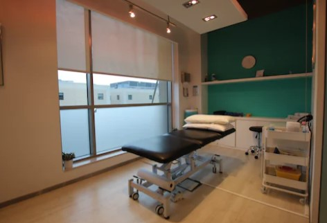

Best Rehabilitation Center in City
About Us
Welcome to Kurnool Rehabilitation Center, a leading rehabilitation facility dedicated to helping individuals
on their path to recovery and reclaiming a life of health, happiness, and independence. With a compassionate and
experienced team of professionals, we are committed to providing exceptional care and support to our clients,
empowering them to overcome challenges and achieve their rehabilitation goals.
At Kurnool Rehabilitation Center, we understand that each person's journey to recovery is unique. That's why we
offer a comprehensive range of specialized rehabilitation services tailored to meet the diverse needs of our
clients.
Our state-of-the-art facility is equipped with the latest advancements in rehabilitation technology, enabling us
to deliver evidence-based treatments and therapies. From advanced physical therapy techniques to occupational
therapy, speech therapy, and more, we utilize a multidisciplinary approach to address all aspects of your
recovery. Our team is committed to staying up-to-date with the latest research and industry practices, ensuring
that you receive the highest quality of care.
At Kurnool Rehabilitation Center, we believe that a positive and nurturing environment plays a crucial role in
the recovery process. Our facility is designed to foster a welcoming atmosphere where you can feel comfortable,
supported, and motivated. We prioritize open communication, trust, and respect, ensuring that you are actively
involved in your rehabilitation journey every step of the way. We value your unique goals and aspirations and
strive to create an individualized plan that aligns with your needs.
Beyond our exceptional clinical care, we recognize the importance of emotional support during the rehabilitation
process. Our caring and dedicated staff members are here to provide you with the empathy, encouragement, and
guidance you need to overcome obstacles and build resilience. We foster a sense of community among our clients,
fostering connections and creating a support network that can make a significant difference in your recovery.
Choosing Kurnool Rehabilitation Center means choosing a partner in your journey to recovery. Our commitment to
excellence, professionalism, and compassion sets us apart as a trusted destination for rehabilitation services.
We are dedicated to helping you achieve your goals, regain independence, and live life to the fullest.
We invite you to explore our website to learn more about our comprehensive range of rehabilitation services,
meet our experienced team, and get a glimpse into the transformative journeys of our clients. If you have any
questions or would like to schedule a consultation, please don't hesitate to contact us. We look forward to
being a part of your rehabilitation success story.
Our Services
What Our Clients Say?
Latest Blogs from our bloggers!
Address
Shop No: 26 & 27
First Floor, K.S. Complex
Opp: Brahma Reddy Hospital
Birla Compound, Kurnool, Andhra Pradesh, 518002